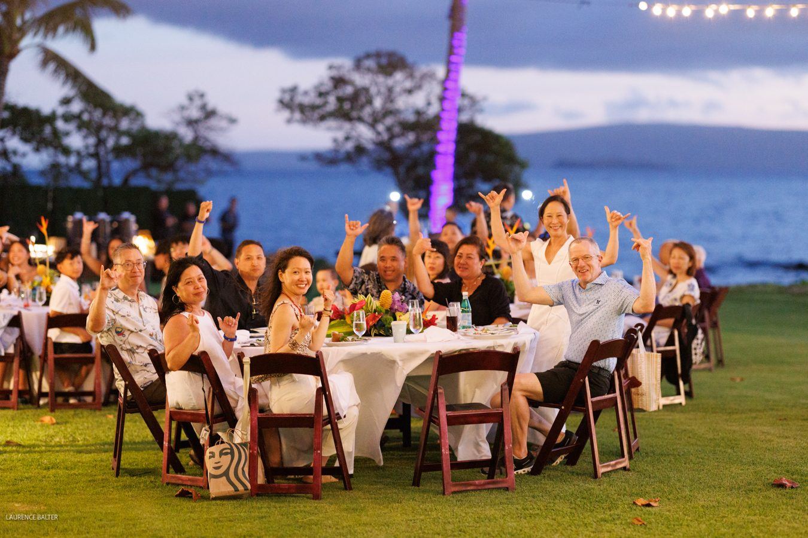
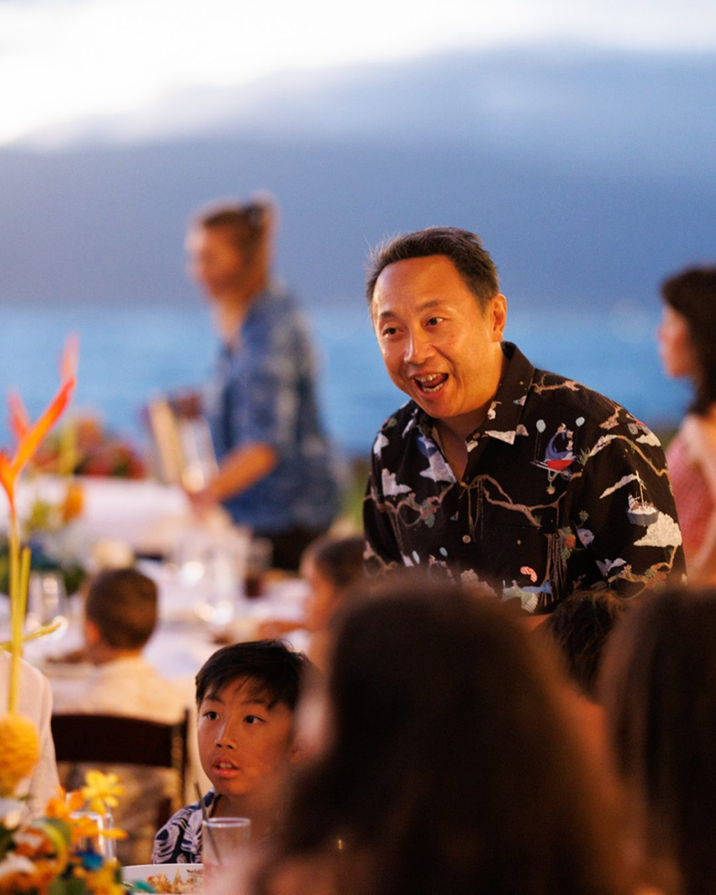
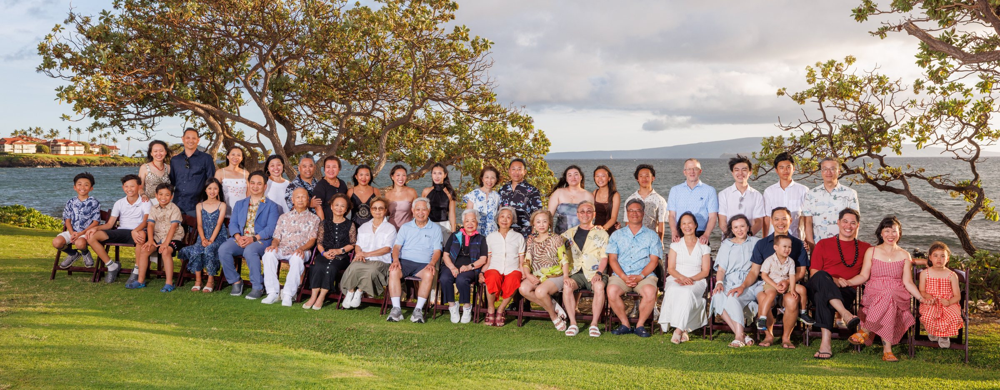

Family Reunions & Legacy Portraits in Maui
When family gathers from around the world for a week in Maui, the farewell dinner is the night everyone remembers — and the Family Legacy Portrait is how it lasts. We photograph reunions of every size, right down to a single frame with all forty of you in it.
Everyone in one place — just this once.

Everyone in one place — just this once.
A Maui reunion is a rare thing: grandparents, cousins and children flying in from around the world to share one sun-filled week together. On the evening of the farewell dinner we gather everyone first — before the celebration gets underway — while the light is at its golden best and the whole family is fresh, together, and looking their finest.
That single frame becomes the family heirloom. Then we stay on through the dinner, moving quietly among the tables to capture the toasts, the laughter and the small moments between courses — the evening exactly as it felt.
Everyone, in a single frame.

Planning a reunion? Start here.
How large a group can you photograph?
Any size. This Legacy Portrait gathered forty family members into a single frame, and we’re equipped for groups larger still — the bigger the family, the better.
When do you take the big group portrait?
Before the evening gets underway, during the golden hour just before sunset. The light is at its most flattering then, and it’s far easier to gather everyone relaxed and looking their best while the celebration is still ahead of them.
Where do the reunion portraits happen?
Wherever your family is staying or celebrating. This group gathered on the oceanfront grounds of the Wailea Beach Resort; we also photograph across the beaches and lawns of Wailea, Makena and South Maui.
Can you cover the farewell dinner too, not just the portrait?
Yes — and many families do exactly that. We usually take the full-family Legacy Portrait first, at golden hour before the evening begins, then stay on to quietly document the dinner and celebration as the night unfolds.
How do we plan a reunion session?
Every reunion is different, so these are arranged individually rather than booked online. Send us your dates, your group size and where you’re staying, and we’ll build the right plan with you.